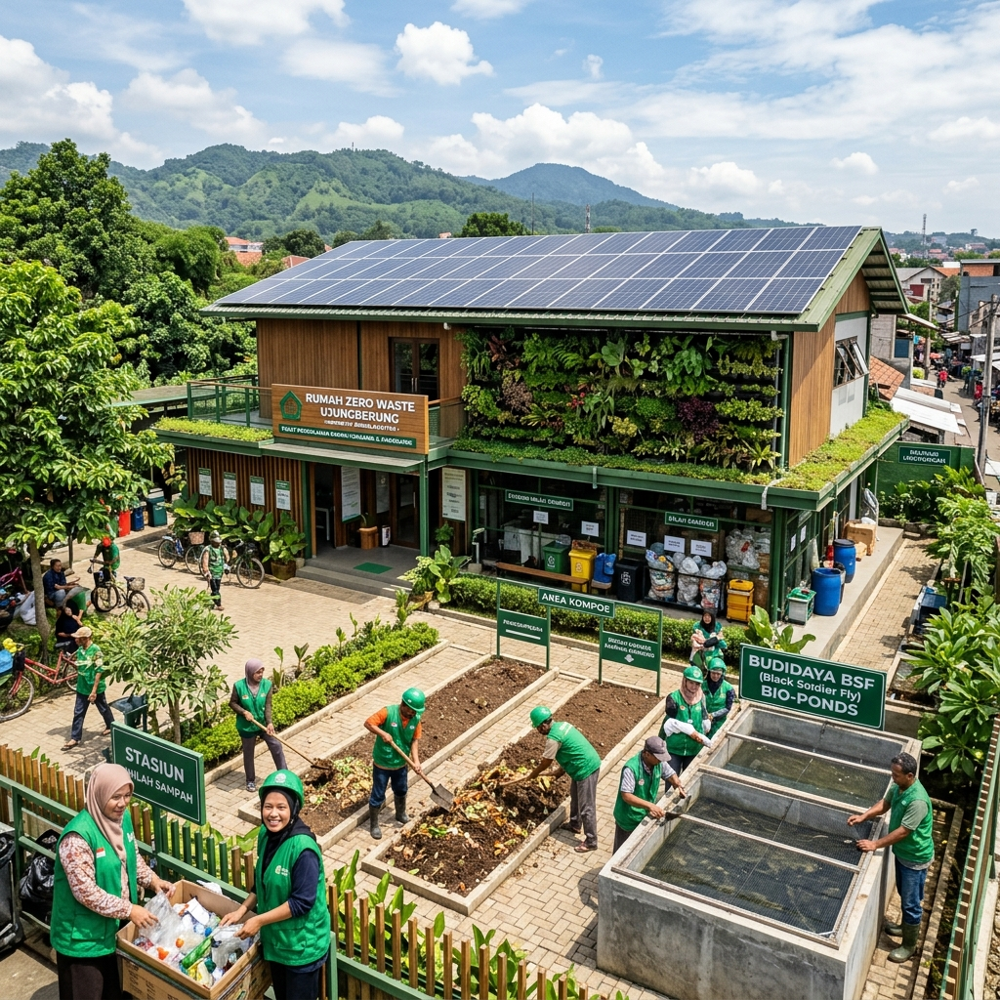

Bukan proposal di atas kertas. Ini adalah prototype nyata yang sudah berjalan — mengubah sampah organik 42 KK RW 01 Sukup Lama menjadi pakan ternak, pupuk organik, dan energi biogas, sekaligus menciptakan 7 green jobs permanen di komunitas.
Dipilih bukan secara acak — RW 01 Sukup Lama memiliki karakteristik ideal sebagai Living Lab yang dapat direplikasi ke seluruh Indonesia.

Living Lab berbeda dari pilot biasa. Ini adalah ekosistem penelitian nyata di mana komunitas menjadi subyek sekaligus peneliti — belajar, bereksperimen, dan menghasilkan nilai secara bersamaan. Inilah yang membuat proposal ini unggul dari sekadar rencana.
Warga RW 01 bukan penerima manfaat pasif — mereka adalah operator, teknisi, analis data, dan agen distribusi dari sistem yang mereka bangun sendiri.
Sensor IoT mencatat setiap data: berat sampah, suhu pond, produksi gas, berat maggot — semua transparan di dashboard yang bisa diakses juri hibah kapan saja.
Setiap proses, SOP, dan formula ekonomi yang berhasil di Sukup Lama akan didokumentasikan sebagai template yang bisa direplikasi ke 514 kabupaten/kota.
Rp 50 juta untuk membuktikan model — jauh lebih berisiko rendah dan lebih meyakinkan bagi donor daripada proposal besar tanpa bukti lapangan.
Kondisi yang kami dokumentasikan langsung dari lapangan — bukan data sekunder semata.
Seluruh ~35 kg sampah organik/hari dari 42 KK Sukup Lama masih berakhir di TPA Sarimukti — tanpa pemilahan, tanpa nilai tambah.
Belum ada satu pun green job formal di komunitas ini. Potensi tenaga kerja produktif (usia 18–45 tahun) belum terserap di sektor ekonomi hijau.
Rata-rata warga menghabiskan Rp 800 ribu/bulan untuk LPG & listrik. BioCNG komunal dapat memangkas biaya ini hingga 40%.
Warga produktif tidak memiliki akses pelatihan green economy. Tidak ada platform digital yang menyesuaikan dengan kondisi komunitas urban-pinggiran.
Living Lab RW 01 Sukup Lama secara langsung dan spesifik menjawab seluruh tema yang ditetapkan BAPPENAS & GIZ.
Living Lab menjadi pusat pelatihan berbasis praktik langsung. Warga Sukup Lama dilatih mengoperasikan bio-pond, membaca sensor IoT, dan mengelola keuangan sirkular melalui simulator digital kami.
Sukup Lama menjadi proof-of-concept bahwa pasar kerja hijau bisa lahir di tingkat RW. Produk (pakan, pupuk, CNG) menciptakan rantai pasok lokal yang menghubungkan petani, peternak, dan rumah tangga.
Inilah keunggulan utama kami: bukan teori, tapi implementasi nyata di lokasi spesifik — RW 01 Sukup Lama. Dengan IoT real-time, simulator bisa dicoba langsung, dan data lapangan tersedia untuk dievaluasi juri.
Satu platform mengintegrasikan seluruh rantai nilai — dari saat warga membuang sampah hingga rupiah masuk ke kas komunitas.
Warga scan QR → berat tercatat → poin digital
Sensor pantau suhu, gas, berat real-time
Maggot konsumsi sampah, panen hari ke-10
Sisa organik → biogas → tabung CNG
Pakan, pupuk & CNG dijual ke komunitas
Revenue ke warga, operator & kas RW
Mengintegrasikan pemilahan sampah anorganik (plastik, kertas, botol kaca, kaleng aluminium) ke dalam platform digital ZeroWaste. Warga mendapatkan poin reward langsung berdasarkan berat timbangan terverifikasi.
2 unit bio-pond berkapasitas total 30 kg sampah/hari. Maggot BSF mengonsumsi sisa makanan, sayuran, dan limbah dapur warga. Larva panen setiap 12–14 hari menjadi pakan ternak berprotein tinggi (42%).
1 unit reaktor anaerob 500L yang mengolah 5–8 kg biomassa/hari menjadi biogas rumahan. Gas dialirkan langsung ke kompor komunal dan disimpan dalam tabung kecil untuk distribusi ke 5–10 KK sekitar.
Setiap jabatan diisi oleh warga setempat — bukan tenaga luar. Pelatihan dilakukan via simulator digital dan praktek langsung di bio-pond dan reaktor.
Total insentif komunitas: Rp 4–6 juta/bulan setelah sistem berjalan penuh. Jika direplikasi ke 500 RW di Bandung = 3.500 green jobs baru di satu kota saja.
Platform GreenSampah sudah berjalan. Simulator BSF & BioCNG live dan bisa diakses — bukan mockup, tapi sistem kerja yang siap dikoneksikan ke hardware lapangan.
Proyeksi berbasis kapasitas nyata: 42 KK, 35 kg sampah/hari, 2 bio-pond, 1 reaktor 500L.
Setiap tahap memiliki deliverable konkret yang dapat dievaluasi oleh BAPPENAS, GIZ, dan Green Welfare ID.
Pemasangan 2 unit bio-pond BSF (kapasitas 15 kg/hari masing-masing) dan 1 reaktor biogas 500L di lahan komunal RW 01. Instalasi sensor IoT dasar (suhu, kelembaban, gas). Sosialisasi ke 42 KK dan rekrutmen 7 green worker perdana.
Siklus BSF pertama berjalan (14 hari). Panen maggot perdana dari komunitas Sukup Lama. Pelatihan intensif 7 green worker menggunakan simulator digital. Pengumpulan data baseline produksi, emisi, dan pendapatan. Laporan progres ke mitra hibah.
Sistem berjalan penuh dengan 3 siklus maggot selesai. Pakan ternak dan pupuk kasgot mulai dijual ke peternak & petani lokal Ujungberung. Gas biogas didistribusikan ke 10 KK terdekat. Revenue pertama masuk ke kas komunitas RW 01.
Menyusun laporan dampak komprehensif (lingkungan, ekonomi, sosial). Mendokumentasikan seluruh SOP operasional sebagai blueprint replicable. Presentasi hasil di Indonesia Green Jobs Conference 2026. Persiapan ekspansi ke 10 RW berikutnya di Bandung.
Anggaran dirancang dengan prinsip do more with less: setiap rupiah menghasilkan aset fisik, kompetensi manusia, dan data terverifikasi yang bisa diskalakan.
Cukup untuk membangun infrastruktur penuh, melatih 7 green workers, mengoperasikan sistem 12 bulan, dan menghasilkan blueprint replikasi nasional.
| Komponen | Detail | Anggaran | % |
|---|---|---|---|
|
🐛 Bio-Pond BSF (2 unit)
Bak fiber, net, pipa, aerasi, alat panen
|
Kapasitas 30 kg sampah/hari | Rp 8.500.000 | 17% |
|
⚗️ Reaktor Biogas 500L
HDPE drum, pipa, katup, manometer, slang
|
Inkl. kompor & tabung penampung gas | Rp 7.000.000 | 14% |
|
📡 Sensor IoT & Gateway
DHT22, MQ-4, MQ-136, ESP32, load cell, power
|
Koneksi ke dashboard real-time | Rp 5.500.000 | 11% |
|
🏗️ Konstruksi & Instalasi
Atap greenhouse, rak, plumbing, listrik
|
Di lahan komunal RW 01 | Rp 6.000.000 | 12% |
|
🐛 Bibit Maggot BSF Perdana
Telur/larva BSF terseleksi + media starter
|
Cukup untuk 3 siklus perdana | Rp 2.000.000 | 4% |
|
🎓 Pelatihan & Sertifikasi
Workshop 7 green workers, modul, sertifikat
|
3 sesi pelatihan intensif | Rp 5.000.000 | 10% |
|
🔧 Operasional 12 Bulan
Insentif warga, transportasi, utilitas, ATK
|
~Rp 1,1 jt/bulan operasional | Rp 13.000.000 | 26% |
|
📊 M&E & Pelaporan
Laporan dampak, dokumentasi, presentasi konferensi
|
Standar pelaporan GIZ/BAPPENAS | Rp 3.000.000 | 6% |
| TOTAL PENGAJUAN HIBAH LIVING LAB | Rp 50.000.000 | 100% | |
Kolaborasi multi-pihak untuk memastikan keberhasilan dan keberlanjutan RW 01 Sukup Lama
Dengan dana ini, RW 01 Sukup Lama akan menjadi Living Lab pertama di Indonesia yang membuktikan bahwa ekonomi sirkular berbasis komunitas bisa mandiri secara finansial, terukur secara lingkungan, dan menciptakan pekerjaan hijau yang bermartabat — dimulai dari 42 KK, menjadi cetak biru nasional.